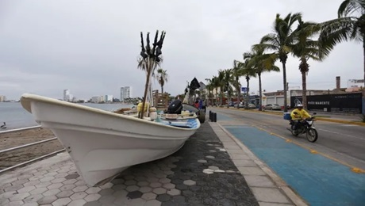

Noticias De México
Resumen de noticias de la ruptura de relaciones entre México y Ecuador del 6 de
abrilEl personal diplomático que estaba acreditado en la Embajada de México en Quito
regresará junto a sus familias a territorio mexicano este domingo, luego de que el país
norteamericano rompiera relaciones diplomáticas con Ecuador tras el operativo de este
viernes en el que fuerzas de seguridad irrumpieron en la sede para detener al
exvicepresidente ecuatoriano Jorge Glas.
La canciller de Ecuador, Gabriela Sommerfeld, dijo este sábado en conferencia de prensa
que las fuerzas de seguridad irrumpieron este viernes en la Embajada de México en Quito
para arrestar al exvicepresidente Jorge Glas debido a un "riesgo real de fuga inminente"
Resumen de noticias del huracán Orlene en México LO QUE SABEMOS.
El huracán Orlene llevará fuertes lluvias y la posibilidad de graves inundaciones en
zonas turísticas de Mazatlán
El huracán Orlene, de categoría 2, tiene vientos de 168 km/h con ráfagas más altas.
Se espera que Orlene impacte la costa sur del estado de Sinaloa y el norte de Nayarit,
según las autoridades de México

Resumen de noticias de los estadounidenses secuestrados en Matamoros,
México.
cuando su barco zarpó sin ellos porque tardaban en regresar, una pareja estadounidense
—de 84 y 81 años— también fue abandonada por la compañía de cruceros en España.
Richard y Claudene Gordon, de Salt Lake City, Utah, se encontraban en un crucero por el
Mediterráneo a bordo del Norwegian Viva con familiares y amigos y esperaban celebrar el
85 cumpleaños de Richard a finales de esta semana.
Este lunes, mientras el barco estaba atracado en Motril (España), la pareja hizo una
excursión independiente a la histórica ciudad de Granada, que no fue organizada por la
compañía de cruceros. A su regreso, el autobús sufrió un retraso de una hora debido a
una
tormenta, según explicó Richard Gordon a CNN por teléfono.